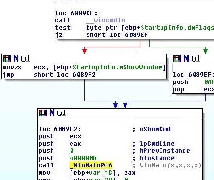
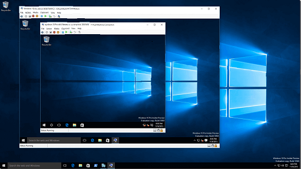

Merhabalar. Bu yazımda Siber Küme Yaz Kampı'nda öğrendiğim birkaç şeyi paylaşacağım. Hocam Fatih Erdoğan'a ve emeği geçen herkese teşekkürler.
Öncelikle kamp TOBB ETÜ'de yapıldı ve katılım oldukça fazlaydı. Siber güvenliğe dair birçok eğitim vardı. Seçim yapmakta zorlansam da, artık tersine mühendislikle tanışmanın zamanı geldi diye düşündüm ve onu seçtim. Assembly oldukça karışık görünüyor. Dolayısıyla bu konulara biraz mesafeliydim. Şimdi korkularla yüzleşme zamanı!
Virüs Çeşitleri
Boot Sector/MBR
Diskin MBR bölümüne enfekte olur ve boot yavaşlamasına sebep olur. Sistemin her açılışında etkin hale gelirler ve açılışta ilk kullanılan dosyalara bulaşarak sistem üzerinde etki sağlarlar.
File Infector
Sistemdeki çalıştırılabilir dosyalara enfekte olarak yaşam ve kalıcılık artırmayı amaçlarlar.
İçindeki gömülü kodları diğer yazılımlara enjekte ederek kendilerini çoğaltırlar.
Diğer dosyalara bulaşırlar.
Macro Virus
Ofis yazılımları ile gelen makro özelliği ile sistemlere bulaşır.
Encrypted Virus
Virüsün bir bölümü rastgele bir şifreleme anahtarı oluşturur ve virüsün kalanını şifreler.
Polymorphic Virus
İmza tabanlı tespit mekanizmalarını atlatmayı amaçlar. Kendi kodlarını değiştirebilir. Garbage(anlamsız) kod ekleyebilir.
Metamorphic Virus
Her çalıştığında ana işlevini kaybetmeden kendini farklı biçimlere sokar, kendi kodunu değiştirir.
Worm
Dosyanın açılmasına gerek yok. Uygulamalara enfekte olmaz. Sadece kendini yayar. Gereksiz ağ trafiğine sebep olur. Ağ paylaşım klasörlerindeki kullanılmayan dosyalar belirti olabilir.
Trojan
Truva atı da denir. Bir yazılımın içine gömülen zararlı kod parçalarıdır. Arkaplanda port açarak uzaktan erişim sağlayabilir.
Malware
Bir bilgisayar sistemine zarar vermek, sisteme uzaktan yetkisiz bağlantı kurmak, kurbanın bilgi ve kaynaklarını çalmak/sömürmek vs. için özel olarak tasarlanmış yazılımlardır.
Rootkit
Amacı yayılmak değil, kendisini gizlemek. Kernel seviyesinde çalışırlar. Driver gibi davranırlar. Task Managerda processleri gizleyebilir.
Backdoor
Bir bilgisayar sisteminin güvenlik önlemlerini bypass ederek, normal giriş-çıkış noktaları dışında bir kapı oluşturmaktır. Amaç sisteme yetkisiz erişim sağlamaktır.
Spyware
Casus yazılım da denir. Kurbanın birtakım hassas bilgilerini toplayıp saldırgana gönderir.
Ransomware
Fidye yazılımlarıdır. Kurbanın belgelerini (genelde)RSA algoritması kullanarak şifreler ve para ister.
Coinminer
Kripto para üretmek için kurbanın makinesinin kaynaklarını(CPU, GPU, RAM, Bant Genişliği ve Elektrik Enerjisi) kullanır.
Windows Mimarisi
User Mode :
Kullanıcıya ait uygulamaların çalıştığı kısımdır. Donanımlara doğrudan erişimi yoktur.
Kernel Mode :
Driverların çalıştığı kısımdır. CPU, RAM gibi donanım kaynaklarına doğrudan erişebilir. Uygulama kendisine ait virtual adres alanını paylaşır.

Yazılım analizinde sıkça kullanılan IDA
PE(Portable Executable) Dosya Yapısı
Header'lardan ve section'lardan meydana gelir.
PE Header ve İçeriği
Veri ve kod bölümlerinin sayısı
Dosyanın hangi işletim sistemi için oluşturulduğu
Zaman damgası (timestamp)
Opsiyonel başlığın boyutu
İşletim sisteminin dosyayı belleğe nasıl yerleştireceği
DOS Header ve İçeriği
Uyumluluk amacıyla bulunur.
PE dosyayı DOS sistemde çalıştırmaya kalkarsak "program DOS sistemde çalışamaz" şeklinde bir hata verir.
İlk değeri atanmış ve sabit değişkenlerin olduğu kısım.
Diğer Bazı Notlar
Image Base: Programın memory'deki başlangıç kısmı.
File Alignment: Programın disk üzerinde her section bölümünü anlatır.
ASLR: Win XP'den sonra getirilen güvenlik önlemi. Program her çalıştığında farklı bir adreste çalışır. (DLL can move) IDAPro'da tiki kaldırılarak bypass edilebilir.
Image Nx: Dışarıdan müdahaleyi, kod enjekte etmeyi önler. IDAPro'da tiki kaldırılarak bypass edilebilir.
TLS: Esas kod çalışmadan önce çalışan kısım. Örneğin lisans anahtarı girilmesi istenir. Crackleme işlemi burada yapılır.
HEX yazımının tersten olma sebebi Little Endian-Big Endian kavramlarına dayanır.
Statik Analiz: Şüpheli yazılım çalıştırılmadan önce yapılan inceleme ve ön bilgi alma işlemidir. İçerdiği string'ler öğrenilebilir, decompile yapılarak davranışı hakkında tahminde bulunulabilir. Detect It Easy, Radare2, IDA/IDAPro, PEiD gibi programlar kullanılabilir.
Dinamik Analiz: Şüpheli yazılım çalıştırıldığında nasıl davrandığı incelenir. Fakat öncelikle izole edilmiş bir lab ortamı kurulur(VMWare, VirtualBox gibi). Yazılım kayıt defteri üzerinde değişiklikler yapıyor olabilir, dosyalar oluşturuyor veya siliyor olabilir, başka process
'ler oluşturuyor olabilir. Regshot, System Monitor, Process Hacker, Process Monitor, Capture BAT gibi programlar kullanılabilir.
Zararlı yazılımların bazı özellikleri: Packer(Themida, VmProtect gibi), Dropper, Downloader
Virüs, mutex oluşturarak daha önce o cihaza enfekte olup olmadığını kontrol eder.
.NET ve JAVA ile yazılmış zararlıları debug etmeye gerek yok; decompile ile kodlar direkt olarak görüntülenebilir.
Anti-Analiz Teknikleri
Zararlıların analiz edildiğini anlamak için gerçekleştirdiği tekniklerdir. Anti-VM, Anti-Debugging, Anti-Disassembly gibi. Eğer zararlı yazılım durumun farkına varırsa; yapacağı asıl zararlı işlemi yapmaz ve muhtemelen kendisini siler.

Sanal makine; ava giderken avlanmamak için kullanılır.
Anti-VM tekniği şöyle işler: Bilgisayar adı kontrol edilir, BIOS adı kontrol edilir, kurulu programlar kontrol edilir, CPU sıcaklığına bakılır, RAM'e bakılır, işlemci kontrol edilir, ...
Örnek Analiz Aşamaları
NOT: İşlemlerimizi Windows makinede yapıyoruz.
captureBat çalıştırdık. ("CaptureBAT.exe -c -n -l c:\malwareAdi.txt" kodu ile)
Process Monitor çalıştırdık.Malware çalıştıktan sonra filtreleyerek sadece zararlının yaptıklarını inceledik.
Process Hacker çalıştırdık.
System Monitor çalıştırdık (process tree kısmından, başka process çalıştırmış mı görürüz.)
Regshot ile ilk shot'ı aldık. Malware'i çalıştırdıktan sonra ikinci shot'ı aldık. Karşılaştırdık.